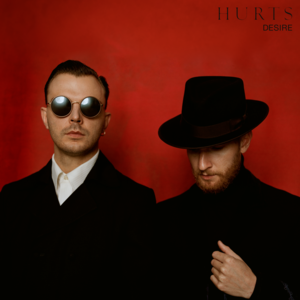

Happiness (2010)

Exile (2013)
.png)
Surrender (2015)

Desire (2017)
Faith (2020)

Hurts are an English musical duo formed in Manchester in 2009, consisting of singer Theo Hutchcraft and multi-instrumentalist Adam Anderson. They have released five studio albums: Happiness (2010), Exile (2013), Surrender (2015), Desire (2017) and Faith (2020). Their first two albums both reached the top 10 in several countries.
2005–2008: Beginnings
Anderson (born 14 May 1981 in Manchester) and Hutchcraft (born 30 August 1986 in Richmond, North Yorkshire) met outside Manchester's 42nd Street nightclub in November 2005, standing by while their friends got involved in a fight. Too drunk to join in, they began discussing music instead; realising they had similar tastes, they decided to start a band.Over the next few months, they exchanged music and lyrics via e-mail, before forming Bureau in March 2006. They performed their first gig as a quintet in May at The Music Box in Manchester, and were shortly afterwards signed to independent record label High Voltage Sounds.
2009–2012: Happiness
Now called Hurts, the duo recorded an amateur music video for a song called "Wonderful Life", with a female dancer who had responded to an advert they placed in a post office in Manchester. After they uploaded the video to their YouTube channel on 21 April 2009, it quickly went viral and has since had over 38 million views. In July, the band was signed to Sony subsidiary RCA Records as well as RCA imprint Major Label Records, run by their old friend Biff Stannard.
2012–2015: Exile
In September 2012, Hurts confirmed that recording of their next album was underway, with producer Jonas Quant. Their second studio album, Exile, was available on 11 March 2013. A video-teaser on iTunes contained a new track from Exile called "The Road", which was released on 14 December 2012 on YouTube. In autumn 2013 the video got a nomination for UK Music Video Awards as the Best Music Ad – TV or Online. An audio-only video of "The Road" was also uploaded.
The lead single from the album, "Miracle", premiered on BBC Radio 1 on 4 January 2013. A music video directed by Chris Turner was uploaded to YouTube on 4 February, but was permanently removed shortly after. A second video was shot and appeared online on 28 February. The single reached number 23 in Germany and number 120 in the UK.
2015 – 2017: Surrender
In May 2015, Hurts released a new single titled "Some Kind of Heaven". The release was produced with long-term collaborator Jonas Quant. On 6 October 2015, Hurts released the music video for "Wish", directed by Bryan Adams. Surrender was released on 9 October 2015. At the end of the tour for the album, Hurts released a video for the song "Nothing Will be Bigger Than Us". The video consisted of live concert footage of the Surrender tour in Moscow and London.
2017–2018: Desire
"Beautiful Ones", the first single from Desire, was released on 21 April 2017, the one-year anniversary of the death of American musician Prince, whom Hurts have cited as an inspiration. The song is assumed to be inspired by the Prince song "The Beautiful Ones", from his 1984 breakthrough album Purple Rain. The video for the song was shot in Kiev and was also released on 21 April 2017. In the video, which plays out in reverse, Hutchcraft portrays a drag queen who is chased and beaten by a group of men after one of them mistakes him for a woman in a nightclub and subsequently feels that his masculinity has been insulted. On 1 September, the band released another single, "Ready to Go". The video was filmed in Horwich, Greater Manchester. On 22 September, a single titled "Hold On to Me" was released.
2020–present: Faith
In May 2020, Hurts blacked out their pictures on their social media profiles and posted links to a Telegram profile, on which they released puzzles leading to the release of a lyric video for "Voices", the first single from their upcoming fifth album. With lyrics inspired by "isolation, desperation, and mania", Hutchcraft said that "Voices" had become "oddly prescient" during the COVID-19 pandemic. On 24 June, they revealed that the upcoming album would be titled Faith and released its second single, "Suffer". On 16 July, they released a third single called "Redemption" and announced that the album would be released on 4 September